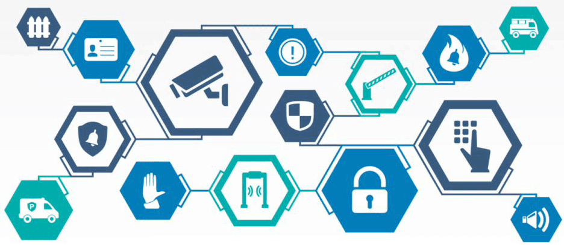

Cyber Security
What does it do?
Cybersecurity is the process of protecting networks and devices from cyberattacks such as hacking or viruses. These cyberattacks are an ever-growing threat in modern society, (considering how reliant society is becoming on technology in order to function properly); as cyberattacks can result in consumers and businesses losing money, private data, and ultimately damage one’s livelihood. In order to prevent such attacks from occurring, strong cyber security systems are set up, which include multiple layers of protection. These layers of protection are spread across programs, networks and devices in order to ensure private information contained in the system, remains private. However, users of the internet also need to be educated on how to make smart choices when using the internet and programs, in order to prevent such attacks from occurring in the first place. Some preventative measures include password protection, using VPNs (to prevent hackers from tracking IP addresses),etc.
There are multiple types of cyber threats:
- Social Engineering: the process of psychologically manipulating people into performing actions of giving away information.
- Advanced Persistent Threats (APTs): these threats are ones in which an unauthorized user gains access to a network without the network owner’s knowledge and remains for a period of time.
- Malware: this threat involves software that is specifically designed to damage or harm the computer without the knowledge of its user.
- Ransomware: this threat involves malicious software that is designed to extort money through blocking access to information or files in the system until the ransom is paid. If a user pays this ransom, there is no guarantee the data will be released, or the system restored.
- Phishing: this threat involves sending fraudulent emails that are designed to resemble legitimate, well-known companies to the user (such as banks, electricity/water/gas companies, etc). These emails are sent to collect sensitive information like banking details, by tricking the victim into believing they are responding to a legitimate email.
There are also three types of attacks:
- Attacks on confidentiality: these attacks involve stealing personal information such as credit cards details, passwords to accounts, etc. Attackers often steal this information and sell it on “the dark web “for others to purchase and use for their own benefit.
- Attacks on integrity: these attacks consist of attackers sabotaging an individual or enterprise by accessing and leaking private information to the public, with the intent to make the public distrust the individual/organisation.
- Attacks on availability: this sort of attack involves a cybercriminal blocking users from accessing their own data by infiltrating the network, often requesting ransoms to be paid in order to make the information available again. Often, companies who suffer from this kind of attack pay the ransom, and fix the vulnerability in their system later, to prevent disruption in business.
Technology that has been designed to prevent cyberattacks includes Hardware Authentication, User-behaviour analytics, Data loss prevention, and Deep learning. In terms of Hardware Authentication, Intel has developed its 6th Generation Core vPro Processor, which has a chipset that includes security functions, allowing the device to become a part of the authentication process, so that a network can ensure that the device attempting to gain access does have the authority to, through hardware authentication. Another development in the realm of cyber security is the use of User-behaviour analytics to locate and prevent attacks. This involves monitoring a user’s behaviour and comparing their past behaviour to recent online behaviour, in order to identify user activity that does not fit the norm, preventing attacks from affecting more users through interception. There is also Deep Learning, which uses modern technologies such as machine learning and artificial intelligence. Unlike User-behaviour analytics, Deep Learning looks at “entities” within a system, such as data centers, which can also behave in a certain pattern, just like users. Recent developments in machine learning allow for these entities to be monitored, and any unusual activity/behaviour can therefore be intercepted. In the future of cyber security, it can be expected that more investments will be made in deep learning in order to combat the ever-evolving threat that cyber attacks prove to be for companies reliant on secure networks.
What is the likely impact?
In terms of Deep Learning in cyber security, the likely impact is that whilst AI and Machine Learning can greatly assist in detecting and fighting cyber-attacks, it may also bring about more risks, and potentially fuel cyber-crime. Considering the rapid growth of AI and its usage within cyber security, it can be expected that AI development will also lead to the development of new types of cyber threats, as well as modifying threats that already exist. The possibility of deep machine learning being misused should be considered before its benefits are trusted completely. Past statistics can also give an estimation of the massive impact cyber security will have in the future, as according to Varonis.com, “In 2016, Uber reported that hackers stole the information of over 57 million riders and drivers”. Such a massive breach of privacy has ensured that companies will employ tactics to improve the protection of their user’s data, which includes the implementation of deep learning, to prevent such attacks from occurring in the future. Anyone who uses the internet for banking purposes, social media, and the storage of personal data will be affected by the rising popularity of AI and deep learning in cybersecurity, as well as hardware authentication. Hardware authentication will ensure that if an individual wants to connect their PC, laptop, phone, etc to a certain network, the authentication code on the chip in their device has to be approved in order for them to obtain access to the network. In terms of AI and machine/deep learning, this new development will be used to prevent future cyber attacks on shopping sites, social media sites, and the sites of important companies that have millions of consumers/users, therefore affecting the protection of anyone who uses such site/s, improving the security of people’s personal data and preventing data theft on major sites such as Facebook, Amazon, Ebay, and applications such as Uber, which contains the addresses and payment details of millions of people from around the world. A majority of the world’s population would be affected in one way or another by the advancements currently being created in cyber security.
How will this affect you?
Considering technology is such an important part of my life at the moment, especially because I am completing a Bachelor of Technology, developments in cyber security will definitely have a great affect on my everyday life. I use online and mobile applications to manage my banking, compile my university work, and store all my personal information, so ensuring that the sites/applications I am using have the best security is of the utmost importance to me. Deep learning and the implementation of such advancements in cyber security, within the websites my family and I use, will affect the amount of trust we place within the websites to store and manage personal data. Cyber attacks and the theft of personal information off banking and shopping sites has been an issue for me and relatives on multiple occasions, with card details being stolen off sites and used for unauthorised purchases, resulting in inconvenience and monetary loss. However, should deep learning and user-behaviour analytics become more prominent in cyber security, such security breaches will be prevented and make life less stressful by giving me and others peace of mind when it comes to storing personal data on applications or websites. Websites may begin notifying users of suspicious activity or log ins on their accounts (much like Facebook and other websites do now) to a higher degree, keeping the user informed of possible cyber attacks and allowing them to change their log-in details to ensure hackers cannot access their personal information. This will give me and others peace of mind when it comes to having private and important data saved in websites and improve the relationship I hold with the companies behind the websites and services. Improvements in a companies’ cyber security will overall improve customer satisfaction and create a better relationship between the consumer and supplier.